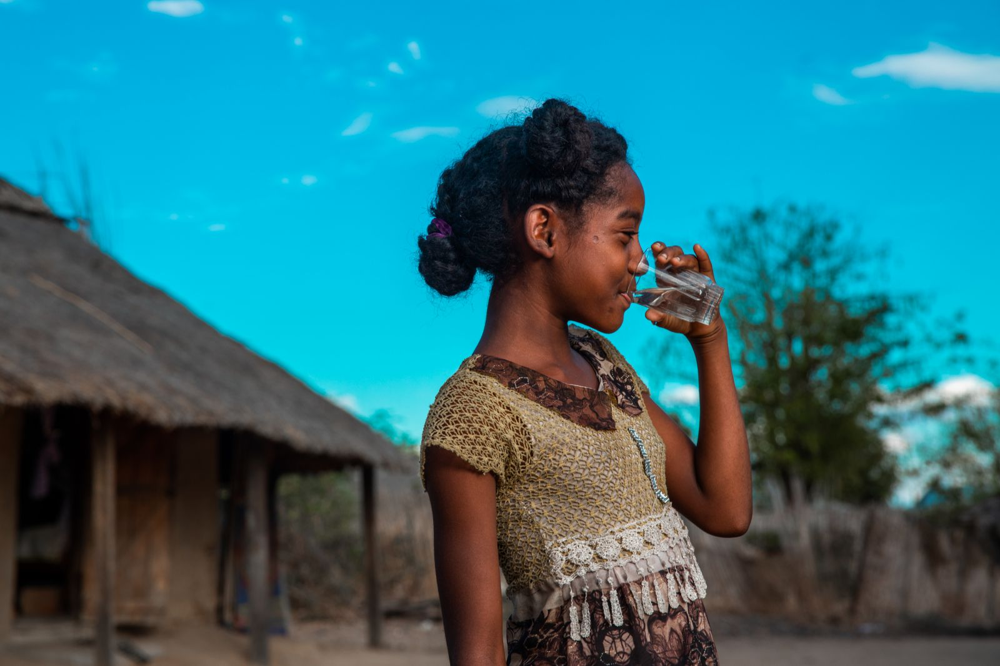

Every splash starts somewhere.
Access to clean water can create opportunities for families and communities. Your support can help bring water projects closer to the people who need them.
We believe donations should feel meaningful and transparent. That's why we want supporters to see where their impact goes.
Clean water projects
Community impact
Transparent giving
